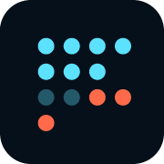
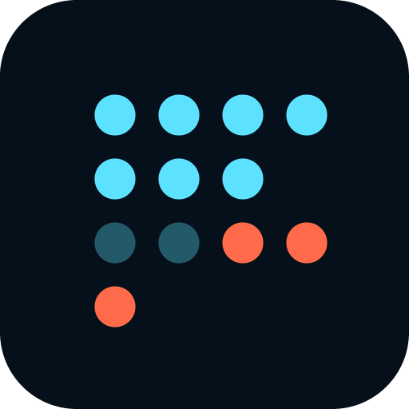
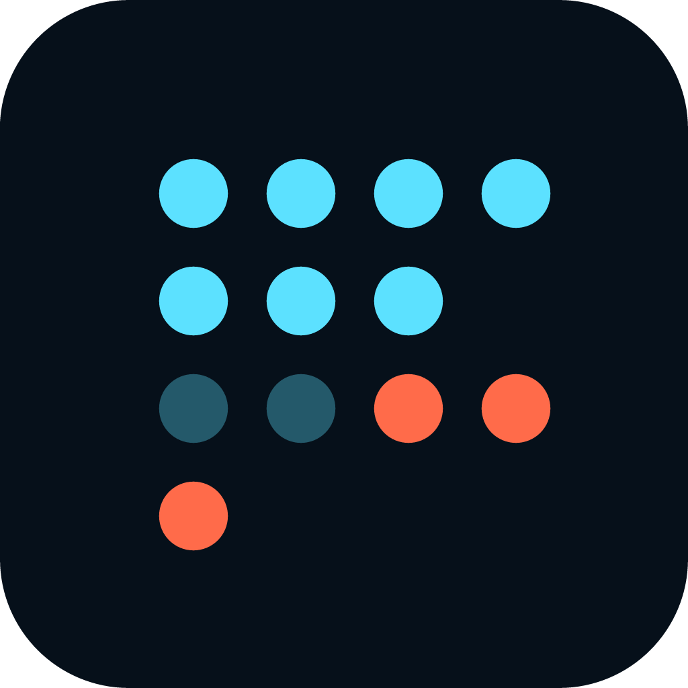

Assets
Every image asset in rtok, copied next to these pages under assets/ (and the fonts under fonts/). The mark always sits on its navy tile, in both themes; never recolour or reorder the bits — the coral cut pattern is the story.
Mark
bitset 4×4: kept · thinned · Δ cut


-
favicon.svgSVG favicon (dots r=1.7, survives 16px) — linked by every page here
site/static/favicon.svg

Wordmark
lockup with its own navy background


-
rtok-logo-wordmark-2x.pngWordmark PNG @2x (moved out of docs/assets/landing-retina in 359bebc)
brand repo: logo/png/rtok-logo-wordmark-2x.png

Favicons & app icons
PNG exports








UI icons
24×24, stroke 1.75, currentColor · shown in fg and accent · web admin + Slint nav
-
overview.svg
crates/rtok-webui/ui/icons/overview.svg -
plugins.svg
crates/rtok-webui/ui/icons/plugins.svg -
calls.svg
crates/rtok-webui/ui/icons/calls.svg -
sessions.svg
crates/rtok-webui/ui/icons/sessions.svg -
doctor.svg
crates/rtok-webui/ui/icons/doctor.svg -
logs.svg
crates/rtok-webui/ui/icons/logs.svg -
skills.svg
crates/rtok-webui/ui/icons/skills.svg -
savings.svg
crates/rtok-webui/ui/icons/savings.svg -
theme.svg
crates/rtok-webui/ui/icons/theme.svg


Feature icons
Signal / scope set for the landing feature grid (SVG + @2x PNG)
- measurefeature-measure.svg · @2x.png
site/static/icons/feature-measure.svg (+@2x.png) - callsfeature-calls.svg · @2x.png
site/static/icons/feature-calls.svg (+@2x.png) - sessionsfeature-sessions.svg · @2x.png
site/static/icons/feature-sessions.svg (+@2x.png) - doctorfeature-doctor.svg · @2x.png
site/static/icons/feature-doctor.svg (+@2x.png) - pluginsfeature-plugins.svg · @2x.png
site/static/icons/feature-plugins.svg (+@2x.png) - savingsfeature-savings.svg · @2x.png
site/static/icons/feature-savings.svg (+@2x.png)


Images
site/static/images
 hero-overview-dark.pngLanding hero, dark (site/content/_index.md)
hero-overview-dark.pngLanding hero, dark (site/content/_index.md)site/static/images/hero-overview-dark.png hero-overview-light.pngLanding hero, light (
hero-overview-light.pngLanding hero, light (source) site/static/images/hero-overview-light.png landing-mock.pngLanding mock — shipped, not referenced by any page (byte-identical to hero-overview-dark.png)
landing-mock.pngLanding mock — shipped, not referenced by any page (byte-identical to hero-overview-dark.png)site/static/images/landing-mock.png webui-desktop.pngSlint webui capture, desktop — shipped, not referenced
webui-desktop.pngSlint webui capture, desktop — shipped, not referencedsite/static/images/webui-desktop.png webui-tablet.pngSlint webui capture, tablet — shipped, not referenced
webui-tablet.pngSlint webui capture, tablet — shipped, not referencedsite/static/images/webui-tablet.png webui-mobile.pngSlint webui capture, mobile — shipped, not referenced
webui-mobile.pngSlint webui capture, mobile — shipped, not referencedsite/static/images/webui-mobile.png
Fonts
IBM Plex Mono, SIL OFL 1.1 (fonts/OFL.txt)
- RTOK Δtok 0123456789IBMPlexMono-Regular.woff2
brand repo: fonts/IBMPlexMono-Regular.woff2 (same family as crates/rtok-webui/ui/fonts/*.ttf) - RTOK Δtok 0123456789IBMPlexMono-SemiBold.woff2
brand repo: fonts/IBMPlexMono-SemiBold.woff2 (same family as crates/rtok-webui/ui/fonts/*.ttf) - RTOK Δtok 0123456789IBMPlexMono-Bold.woff2
brand repo: fonts/IBMPlexMono-Bold.woff2 (same family as crates/rtok-webui/ui/fonts/*.ttf)